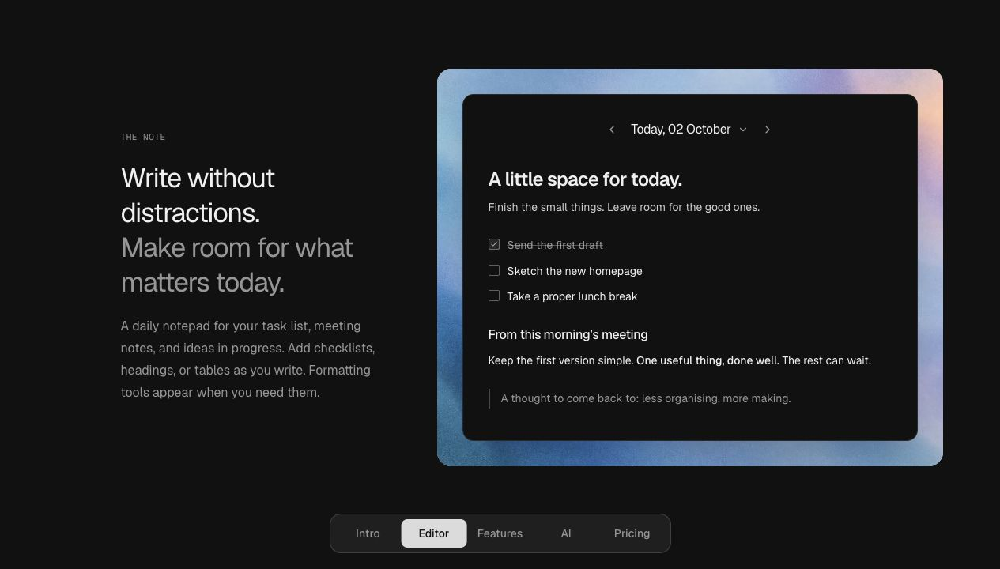

Folio
Quería un lugar sencillo para apuntar las tareas y las ideas de cada día, sin tener que crear y organizar una nota nueva cada vez.
Creé Folio, una aplicación que abre directamente la nota de hoy y guarda lo que escribes automáticamente. Permite añadir listas de tareas y consultar las notas anteriores desde un calendario.
Ver Folio